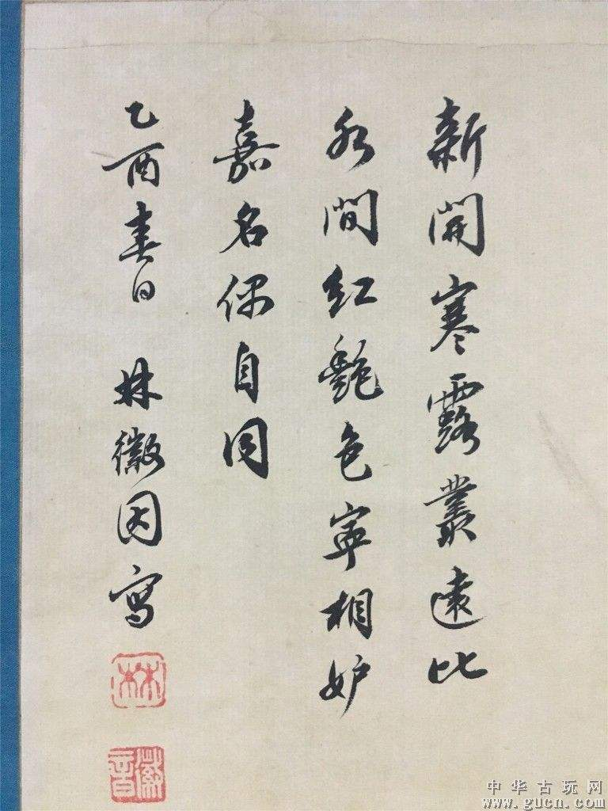

·Introduction

Lin Huiyin's photo
Lin Huiyin (June 10, 1904 - April 1, 1955), formerly known as Huiyin, Han nationality, ancestral home in Fujian Minhou, was born in Hangzhou, Zhejiang.
Lin Huiyin is a professor at Tsinghua University, a famous Chinese architect and writer, and the first female architect in China,
“an outstanding woman in the history of modern Chinese culture”.
In 1937, Liang Sicheng and Liang Sicheng circled and annotated the book "Da Tang Western Regions"
in the collection of China Construction Institute, and discovered the Tang Dynasty building - Mount Wutai Foguang Temple.
After liberation, Lin Huiyin made contributions to the design of the national emblem of the People's Republic of China,
the design of the Monument to the People's Heroes and the innovation of cloisonne craftsmanship,
and authored "Lin Huiyin's Poems" and "Lin Huiyin's Works".
On April 1, 1955, Lin Huiyin passed away at the age of 51.
·Biography
In 1916, she studied at Peihua Girls' High School in Beijing run by the Church of England.
In April 1920, she traveled to Europe with his father, and was influenced by the landlady architect in London, and set up her ambition to study architecture.
In 1923, Xu Zhimo, Hu Shi and others established the Crescent Society in Beijing,
and Lin Huiyin often participated in the literary and artistic activities held by the Crescent Society.
In June 1924, Lin Huiyin and Liang Sicheng went to the United States to study architecture.
In the summer of 1927, after graduating from the Academy of Fine Arts, she entered the Yale School of Drama to study stage design for half a year.
In 1931, Lin Huiyin was employed by the China Construction Institute in Peiping.
In the summer of 1937, she discovered the oldest wooden structure in China, the main hall of Foguang Temple built in the Tang Dynasty, in the Wutai Mountain area of Shanxi.
In 1940, she moved to Lizhuang near Yibin, Sichuan with Liang Sicheng's work unit, Academia Sinica, and lived in a low and dilapidated farmhouse.
·Thoughts
Lin Huiyin, an outstanding woman in the history of modern Chinese culture, is also the first female architect in China.
She and her husband Liang Sicheng dedicate their life to their beloved Chinese architecture and art, jointly created the Chinese ancient architecture research system,
and co-founded the two architecture departments of Northeastern University and Tsinghua University. people.
Lin Huiyin not only has extraordinary achievements in the field of architecture, but also has amazing literary attainments -
her writings are unique, poetic yet scientifically rigorous; her prose is full of spirituality, and her poetry is even more popular.
She has been dedicated to the pursuit of beauty all her life, and has a profound analysis of the theoretical system of aesthetics.
She has pioneered and innovated in the fields of arts and crafts, and achieved outstanding results.
·Works

New China National Emblem Design
Northeastern University emblem design
The main architectural pattern of Babaoshan Revolutionary Cemetery
Cloisonne protection
·Reference
Lin Huiyin - BaiduLin Huiyin - Wikipedia